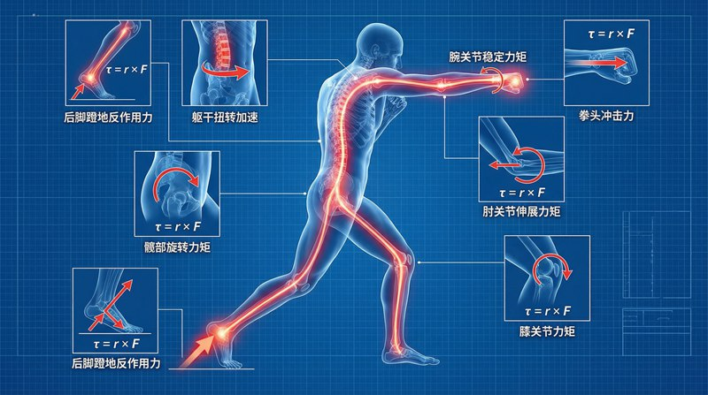

返回课程列表
第四课
动力学
牛顿定律在体育中的完美应用
⏱️ 约55分钟
F=ma是运动训练的核心公式。力量越大、质量越小，加速度越大。这就是为什么短跑运动员既要练力量又要控制体重。
牛顿定律与运动表现
牛顿第二定律F=ma直接决定运动表现。提高成绩的两条路径：增大推进力F或减小阻力，以及优化身体质量m。

F=ma在各项运动中的应用
牛顿第二定律的运动实践：
- 短跑：蹬地力约体重2-3倍，体重80kg的运动员蹬地力约2000N
- 跳高：起跳瞬间地面反作用力约体重4-5倍，持续约0.15秒
- 拳击：出拳力量约400-700N，重量级拳手可超过5000N
- 网球发球：球拍接触球约5毫秒，平均力约1500N
动量与碰撞
动量守恒定律在球类运动中尤为重要。球拍击球、足球射门、台球碰撞——都是动量传递的过程。
球类运动中的碰撞力学
动量传递在球类运动中的体现：
- 网球：球拍与球的碰撞时间约5ms，球速可达250km/h
- 足球：射门时脚与球接触约10ms，球速可达130km/h
- 台球：近似弹性碰撞，动量和动能都近似守恒
- 棒球：球棒击球的最佳击球点（甜蜜点）使手感振动最小